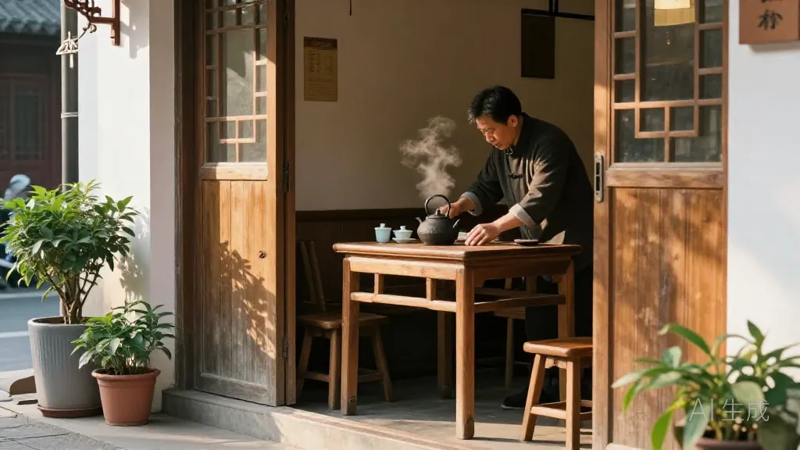
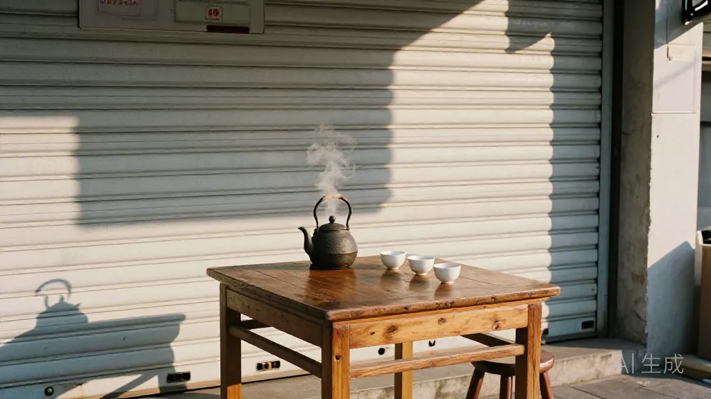
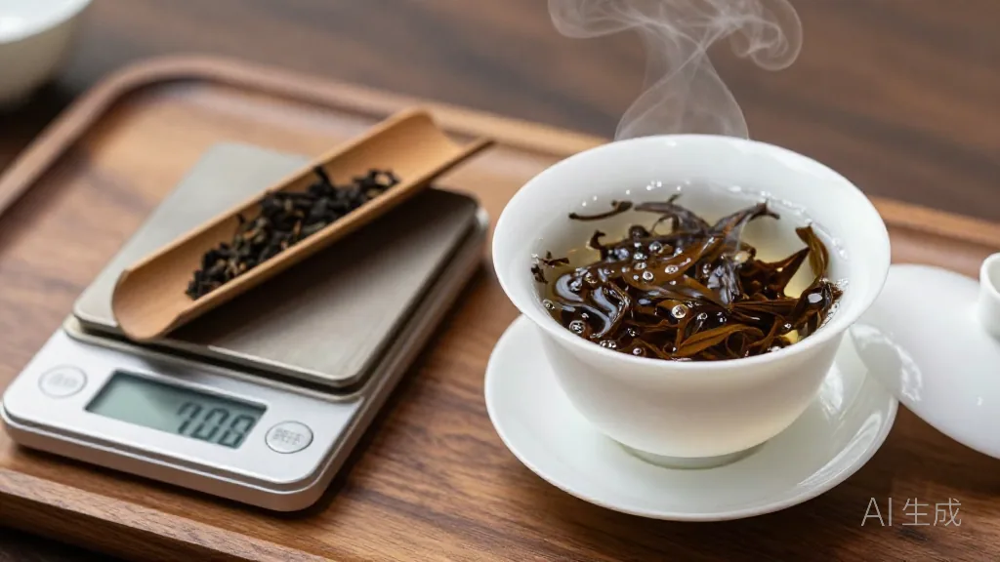
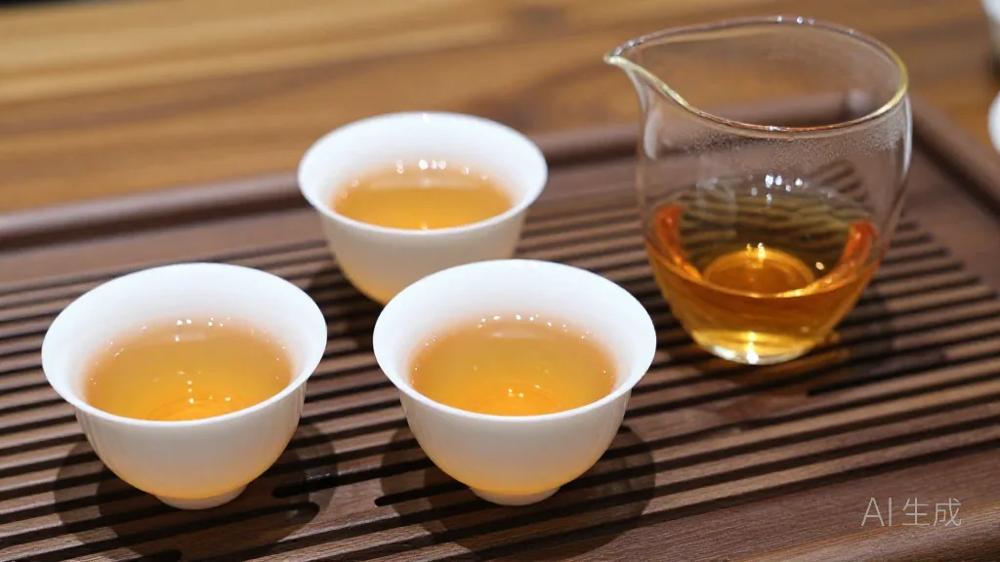
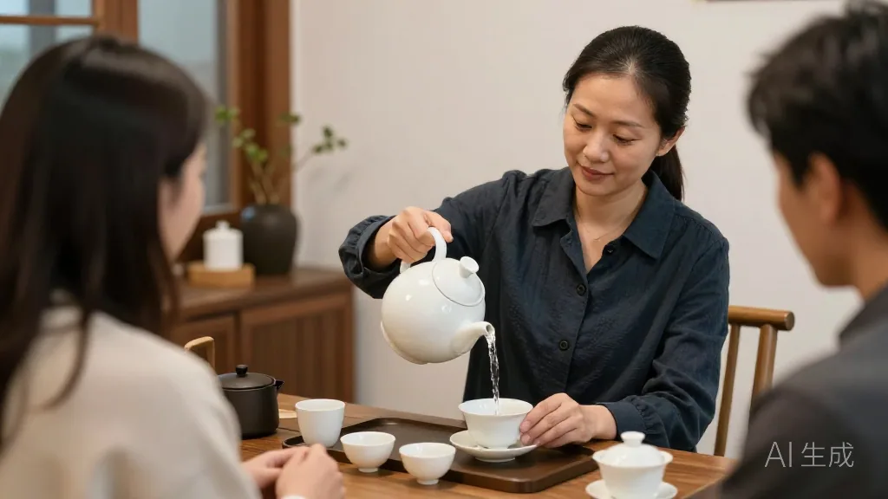
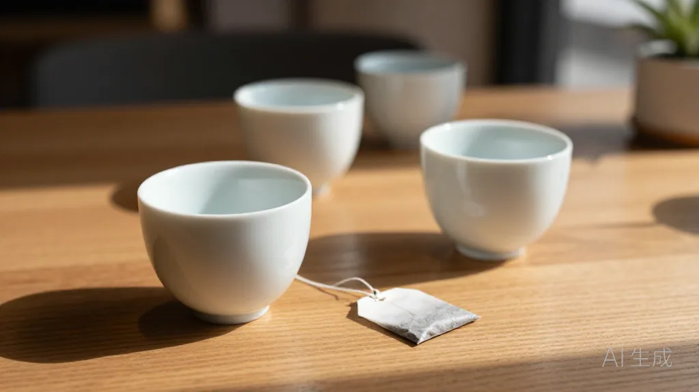

在惠州想看人情冷暖？来东湖花园凤凰茶业坐半天，一张茶桌，三拨客人，半部市井浮世绘。
🌿 开篇问答：关于惠州喝茶，茶友们最常问的几件事
Q1：凤凰单丛为什么值得坐下来慢慢喝？
阿凤姐一句话讲透：「一泡好茶能冲十二三泡，第四、五泡才是精华——快喝的茶，喝不到这个味。」凤凰单丛香气层次多，温杯、称茶、提香、高冲，每一步都影响口感，坐下来慢慢喝才品得出山场与火候。
Q2：惠州哪里能买到正宗的凤凰单丛？
来 阿凤姐茶叶店（惠州凤凰茶业）！地址：惠州市惠城区东湖花园一区沿江商铺89-136，每天 9:00-21:00 营业，全年无休。电话：13435567385（微信同号，支持快递全国）。店里主打凤凰单丛全系列（鸭屎香、蜜兰香、老丛等）与新会陈皮。
Q3：怎么分辨真假凤凰单丛？
阿凤姐教你四招：①看外形——条索紧结、色泽乌褐带光；②闻香气——自然花香，不是香精的冲味；③品滋味——回甘明显、喉韵足，不苦不涩；④观叶底——叶张完整、红镶边，泡开有韧性。
【场景开头】
10 月 9 日清早，惠州东湖花园沿江那排商铺刚开卷闸，空气里还带着水汽。阿凤姐照例先烧水，铁壶咕嘟咕嘟响，整条街的早餐香都飘进来了。她把门口那张老茶桌擦了两遍——这张桌子，迎来送往十年，看过太多人的起落。

【第一幕：引茶】
第一个进门的是刘叔，提着一袋艾粄，电动车都没熄火。「凤姐，昨天那泡鸭屎香，我老伴住院都念着香。」话没落音，一辆面包车「吱」停门口，陈老板抱着纸箱下来，人瘦了一圈，嗓门倒亮：「凤姐，我回来了！先来三十斤蜜兰香，酒楼翻身仗就靠它！」随后是小美，奶茶店的小老板娘，拎着两杯自家新品，一脸愁：「凤姐姐，我那鸭屎香奶茶底，被人跟风打价格战了，你帮我看看咋办？」阿凤姐乐了：「得，今天这桌，酸甜苦辣全齐了。都坐，烧水泡茶再说。」
【第二幕：泡茶】
她起的是老丛蜜兰香。温杯，杯子烫手了才摆好；称茶，9 克，不多不少；小烤炉上提香 5 分钟，茶叶一暖，蜜香就晃出来了。投茶、高冲，100 度开水从高处打下去，茶叶在盖碗里翻滚。第一泡洗茶，汤色倒掉，香气却「粉粉地」散开，满屋子都是。刘叔吸了吸鼻子：「还是这个味，正。」

【第三幕：品茶】
第二泡出汤，茶汤透亮，跟琥珀似的。阿凤姐先递给刘叔，再给陈老板、小美各一杯。「先闻公道杯，再喝。」她说，「好茶的精华在第四、五泡，能泡十二三泡呢。用凤凰山的水泡，香才压得住。」陈老板一口下去，眼圈有点红：「去年我酒楼差点关张，赊你二十斤蜜兰香撑场子，你一句催款没有。今年东江那几桌婚宴，点名要这个味，我才缓过来。」小美接话：「我那小店，茶底也是凤姐姐配的。一斤茶出八十杯，定价 18 块，毛利比纯奶茶高，复购全靠回头客。」刘叔捧着杯子暖手：「我没他们那大生意。我老伴化疗没胃口，就好这一口香，喝得下，就有盼头。」

【第四幕：点题】
阿凤姐一边续水一边说：「你们看，一杯茶，三种喝法。陈老板喝的是东山再起，刘叔喝的是老来伴，小美喝的是小店求生。茶还是那泡茶，人不一样，味就不一样。」「去年陈老板落魄时，也是坐这个位子，我给他倒的也是这杯茶。有人红了就不认路了，他倒好，翻身第一件事就是回来补单，还多带了两盒月饼给街坊。」她顿了顿：「这世道，人情凉得快。可茶是热的。你落魄时我给你倒热茶，你发达了还记得回来，这桌子就没白摆。」

【尾声】
喝到第七泡，香还没散。陈老板当场转账订货，刘叔揣了一小包碎茶说回去给老伴煮粥，小美记下了「加 5 克老丛、降一度水温」的新方子。送走三人，阿凤姐收杯子时笑了笑：「茶桌不大，装得下惠州半条街的人情。明天，还有个从深圳回来的老客，说要讲讲他十年没回潮州的故事——」那故事，可比今天还扎心，咱明儿接着聊。

📍 惠州买茶去哪？阿凤姐茶叶店欢迎你
🏪 店铺：阿凤姐茶叶店（惠州凤凰茶业）
📍 地址：惠州市惠城区东湖花园一区沿江商铺89-136
📱 电话：13435567385（微信同号，支持全国快递）
⏰ 营业时间：每天 9:00-21:00，全年无休
🚗 停车：东湖花园沿街有停车位，导航搜索「凤凰茶业」即可
🍵 店内主营：潮州凤凰单丛全系列（鸭屎香、蜜兰香、黄枝香、芝兰香、老丛等）、新会陈皮、茶礼定制。